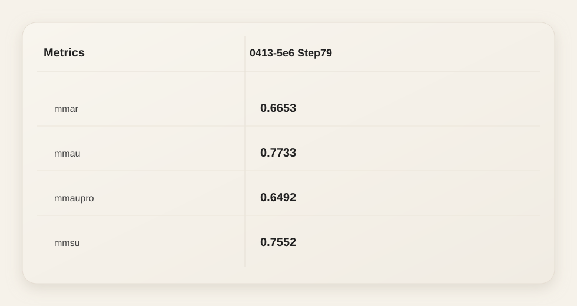

MOSS-Audio
An open-source audio understanding model supporting speech recognition, environmental sound analysis, music understanding, time-aware QA, and complex multi-step reasoning.
Understanding audio requires more than simply transcribing words — it demands the ability to perceive acoustic cues, recognize speakers and emotions, interpret environmental sounds, reason over temporal context, and handle complex multi-step inference. MOSS-Audio is built to unify these capabilities within a single model.
We release four models in this launch: MOSS-Audio-4B-Instruct, MOSS-Audio-4B-Thinking, MOSS-Audio-8B-Instruct, and MOSS-Audio-8B-Thinking. The Instruct variants are optimized for direct instruction following, while the Thinking variants provide stronger chain-of-thought reasoning capabilities.
Key Capabilities
Speech Recognition
ASR + Timestamps
Transcribes speech with optional word- and sentence-level timestamp alignment across diverse acoustic conditions.
Speaker Analysis
Identity & Emotion
Identifies speaker characteristics, analyzes emotional state, and detects key acoustic events.
Environmental Audio
Scene Understanding
Extracts cues from background sounds, noise, and non-speech signals to infer scene context.
Music Understanding
Style & Emotion
Analyzes musical style, emotional progression, instrumentation, and salient acoustic features.
Audio QA
Open-Ended QA
Answers questions and generates summaries about speech, podcasts, meetings, and recordings.
Complex Reasoning
Chain-of-Thought
Multi-hop reasoning over audio content via chain-of-thought training and reinforcement learning.
Architecture
MOSS-Audio follows a modular design comprising three components: a dedicated audio encoder, a modality adapter, and a large language model. Raw audio is encoded into continuous temporal representations at 12.5 Hz, projected into the LLM's embedding space, and consumed for auto-regressive text generation.

Overall architecture of MOSS-Audio
DeepStack Cross-Layer Feature Injection
Using only the encoder's top-layer features tends to lose low-level prosody, transient events, and local time-frequency structure. MOSS-Audio uses a DeepStack-inspired cross-layer injection module: features from earlier and intermediate encoder layers are independently projected and injected into the LLM's early layers, preserving multi-granularity information from low-level acoustic details to high-level semantic abstractions.
Multi-layer injection
Preserves prosody & transients
Encoder trained from scratch
Time-Aware Representation
Explicit time-marker tokens are inserted between audio frame representations at fixed intervals during pretraining, enabling the model to learn "what happened when" within a unified text generation framework. This naturally supports timestamp ASR, event localization, time-based QA, and long-audio retrospection.
Time-marker insertion
12.5 Hz token stream
Qwen3-4B backbone
Evaluation Highlights
MOSS-Audio is evaluated on comprehensive audio understanding benchmarks spanning general audio, speech captioning, ASR, and timestamp alignment.
General Audio (Avg Accuracy)
71.08
MOSS-Audio-8B-Thinking now reaches 71.08 average accuracy, with MMAU 77.33, MMAU-Pro 64.92, MMAR 66.53, and MMSU 75.52.
Speech Captioning (LLM-Judge)
3.7252 / 5
MOSS-Audio-Instruct leads in 11 out of 13 speech-captioning dimensions, with MOSS-Audio-8B-Instruct setting the best overall score.
ASR (Overall CER ↓)
11.30
On the 12-dimension ASR suite, MOSS-Audio achieves the lowest overall CER with particular strength in health-condition, dialect, singing, and non-speech scenarios.
Timestamp ASR · AAS ↓
35.77 / 131.61
MOSS-Audio-8B-Instruct achieves 35.77 AAS on AISHELL-1 and 131.61 on LibriSpeech, dramatically outperforming prior open baselines.
8B Thinking Metrics Snapshot
Updated general-audio benchmark snapshot for checkpoint 0413-5e6 Step79.

Updated MMAR / MMAU / MMAU-Pro / MMSU metrics for MOSS-Audio-8B-Thinking
General Audio Understanding accuracy comparison across open-source and closed-source models
Speech Captioning
Fine-grained speech style captioning evaluated with an LLM-as-a-judge protocol across 13 descriptive dimensions.
ASR
Summary CER results across 12 ASR evaluation dimensions. Lower is better.
| Model | Overall | Health | Dialect | Singing | Non-Speech | Code-Switch | Clean | Noisy | Whisper | Far/Near | Multi-Speaker | Age | Semantic |
|---|---|---|---|---|---|---|---|---|---|---|---|---|---|
| Paraformer-Large | 15.77 | 22.18 | 43.45 | 32.34 | 4.95 | 12.65 | 3.11 | 4.67 | 5.02 | 17.46 | 20.33 | 14.96 | 7.14 |
| GLM-ASR-Nano | 17.29 | 24.49 | 22.39 | 51.95 | 4.65 | 11.88 | 3.68 | 5.02 | 4.94 | 27.51 | 28.02 | 17.19 | 7.32 |
| Fun-ASR-Nano | 12.04 | 21.99 | 7.80 | 19.35 | 4.76 | 11.23 | 2.98 | 3.46 | 3.78 | 18.38 | 19.82 | 14.95 | 6.08 |
| SenseVoice-Small | 14.50 | 24.04 | 8.89 | 23.79 | 4.92 | 13.90 | 4.13 | 4.93 | 5.57 | 26.66 | 24.06 | 17.63 | 7.55 |
| Kimi-Audio-7B-Instruct | 14.12 | 21.11 | 29.34 | 21.76 | 4.68 | 16.38 | 2.20 | 2.15 | 2.66 | 21.02 | 20.61 | 16.74 | 6.12 |
| Qwen2.5-Omni-3B | 15.26 | 24.65 | 33.87 | 24.24 | 5.54 | 11.66 | 2.76 | 3.56 | 4.32 | 22.15 | 22.91 | 15.17 | 7.24 |
| Qwen2.5-Omni-7B | 15.05 | 23.85 | 31.91 | 22.69 | 4.56 | 12.97 | 2.52 | 3.16 | 3.64 | 25.38 | 21.01 | 16.13 | 6.78 |
| Qwen3-Omni-30B-A3B-Instruct | 11.39 | 20.73 | 15.63 | 16.01 | 4.73 | 11.30 | 2.23 | 2.47 | 1.90 | 17.08 | 18.15 | 11.46 | 5.74 |
| MOSS-Audio-4B-Instruct | 11.58 | 21.11 | 11.84 | 10.79 | 4.01 | 10.11 | 3.11 | 3.72 | 3.29 | 18.48 | 20.33 | 15.09 | 8.15 |
| MOSS-Audio-8B-Instruct | 11.30 | 19.18 | 8.76 | 9.81 | 4.31 | 10.18 | 2.70 | 3.20 | 2.75 | 24.04 | 24.36 | 15.26 | 7.69 |
Timestamp ASR
Timestamp alignment quality measured with AAS on both Chinese and English benchmarks. Lower is better.
| Model | AISHELL-1 (zh) | LibriSpeech (en) |
|---|---|---|
| Qwen3-Omni-30B-A3B-Instruct | 833.66 | 646.95 |
| Gemini-3.1-Pro | 708.24 | 871.19 |
| MOSS-Audio-4B-Instruct | 76.96 | 358.13 |
| MOSS-Audio-8B-Instruct | 35.77 | 131.61 |
Demo Gallery
Browse curated demo samples across speech, acoustic scene understanding, music, and reasoning. Each card includes a paired visual, the input audio, the prompt, a short analysis note, and the model output.
Released Models
| Model | Audio Encoder | LLM Backbone | Total Size | Hugging Face |
|---|---|---|---|---|
| MOSS-Audio-4B-Instruct | MOSS-Audio-Encoder | Qwen3-4B | ~4.6B | Model ↗ |
| MOSS-Audio-4B-Thinking | MOSS-Audio-Encoder | Qwen3-4B | ~4.6B | Model ↗ |
| MOSS-Audio-8B-Instruct | MOSS-Audio-Encoder | Qwen3-8B | ~8.6B | Model ↗ |
| MOSS-Audio-8B-Thinking | MOSS-Audio-Encoder | Qwen3-8B | ~8.6B | Model ↗ |